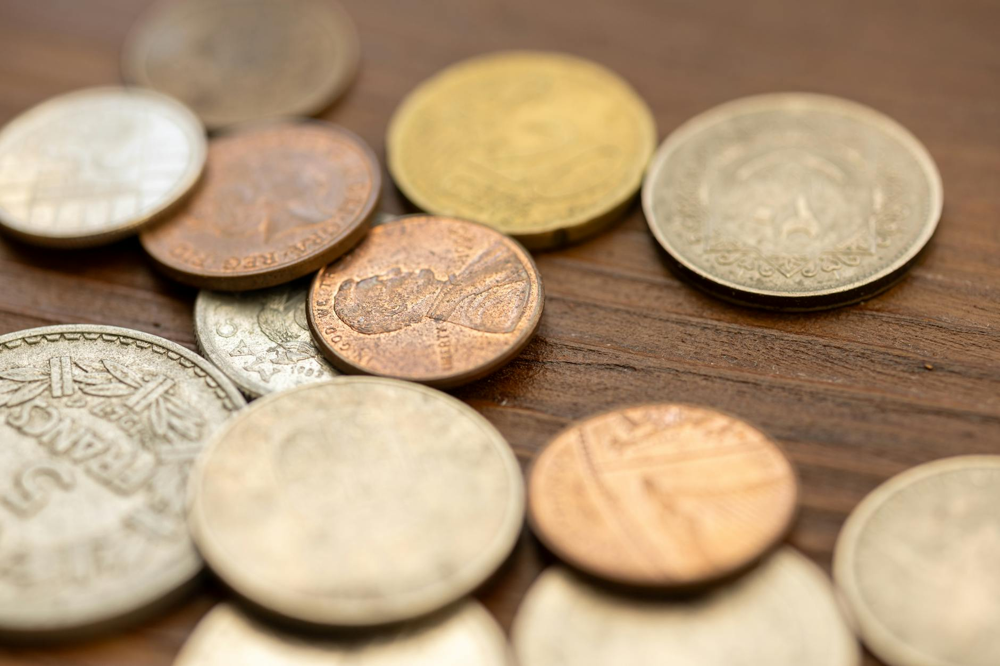

Silver was money before most civilizations had writing. The first silver coins appeared around 600 BC in Lydia, a kingdom in what is now western Turkey. By that point, silver had already been traded by weight for over 3,000 years. The coin was just a more convenient form of something that already had universal value.
That track record matters. No other store of value comes close to silver's documented history as a medium of exchange. Gold has a similar story, but silver was the everyday currency. Gold was for kings. Silver was for commerce.
The First Silver Coins: Lydia and Greece
The kingdom of Lydia, ruled by King Croesus, is credited with minting the first standardized metal coins. Early coins were electrum, a natural alloy of gold and silver. By around 550 BC, the Lydians had separated the two metals and were producing pure silver coins with a consistent weight and purity stamp.
The Greeks adopted the model quickly. Athens struck the famous decadrachm and the tetradrachm, silver coins marked with the owl of Athena on one side. These were not just local currency. Athenian silver was found across the ancient Mediterranean because the coins were trusted. The silver was real, the weight was consistent, and everyone knew it.
The concept that made this work was simple: a coin's value came from its silver content, not from whoever issued it. That idea held for the next 2,500 years.

Rome and the Great Debasement
The Roman denarius started as a near-pure silver coin. Under Augustus, around 1 AD, it was approximately 95% silver. That held for the first two centuries of the empire. Then something familiar happened: Rome needed money, and the easiest way to get it was to put less silver in each coin.
The debasement was gradual at first. By 200 AD the denarius was about 50% silver. By 250 AD, roughly 20%. By 268 AD, under Emperor Gallienus, it had fallen to around 5% silver with a thin silver wash on the outside to make it look like the real thing. The purchasing power of the currency collapsed. Merchants stopped accepting denarii at face value. Prices rose. Trade contracted. The Roman economy fractured, and the political instability that followed contributed to the empire's eventual collapse.
This sequence repeats throughout history, which is why silver historians point to Rome so often. The debasement of currency, replacing real metal with cheaper substitutes, reliably produces inflation. The Roman example is just unusually well-documented.
The Spanish Dollar: Silver as a World Reserve Currency
After Rome, silver coinage continued across medieval Europe, the Islamic world, and China. But the next global silver story is Spanish.
The Spanish discovered massive silver deposits in Potosi, Bolivia, in 1545 and in Mexico shortly after. They minted the peso de ocho, the piece of eight, at 93% silver and distributed it across their global trade empire. For roughly three centuries, the Spanish dollar was the closest thing the world had to a reserve currency. It was accepted in China, India, West Africa, and the American colonies alike.
The American dollar itself was originally defined in terms of the Spanish piece of eight. When the US Congress passed the Coinage Act of 1792, it set one dollar equal to 371.25 grains of pure silver. Silver was not backing the currency the way gold backed later systems. Silver was the currency.
American Silver: Morgan to 1965
The US minted silver coins from the start. The Morgan dollar, struck from 1878 to 1904 and again in 1921, became one of the most recognized coins in American history. It contained 0.7734 troy ounces of silver, 90% pure, at a face value of one dollar. The same composition applied to quarters, dimes, and half dollars.
That standard held for 173 years, through world wars, the Great Depression, and the postwar boom. Then in 1964, Lyndon Johnson signed the Coinage Act of 1965. Starting in 1965, dimes and quarters were made from copper and nickel. Half dollars dropped to 40% silver before going copper-nickel in 1971. The Kennedy half dollar minted in 1964 was the last 90% silver coin struck for general circulation in the United States.

Four Eras, One Pattern
Lydia and Greece. The first standardized silver coins. Value derived entirely from silver content. Trusted across civilizations precisely because the metal was real and verifiable.
Rome. The denarius goes from 95% to 5% silver. Inflation follows. The economic disruption contributes to political instability and the eventual collapse of the western empire.
Spain and the Americas. The piece of eight becomes the world's first global reserve currency, circulating across four continents. The US dollar traces its origins directly to this coin.
United States. 173 years of silver coinage, from the Coinage Act of 1792 to the Kennedy half dollar in 1964. In 1965, silver leaves US currency for the first time in the nation's history.
What This Means for Buyers Today
Pre-1965 US coins are often called junk silver. The name describes their numismatic status, not their value. Every dime, quarter, half dollar, and dollar minted before 1965 contains real silver. They are tangible records of an era when US currency was backed by actual metal, not government decree.
The history matters for two reasons. First, it puts silver's track record in perspective. Every paper currency in history has eventually been inflated or replaced. Silver has been money across dozens of civilizations and thousands of years because its value is intrinsic. You cannot print it. You cannot create it by policy decision.
Second, the Roman debasement story is not ancient history. Every modern central bank faces the same pressure Rome did: fund obligations by reducing the real value of the currency. Silver does not participate in that game. Its purchasing power over long timescales has proven remarkably stable, measured not in dollars but in what an ounce of silver can actually buy.
Collectors buy junk silver because it is history in hand. Investors buy it because it is one of the lowest-premium ways to hold real silver. Both reasons trace back to the same 4,000-year track record.
Sources
- Balmuth, Miriam S. — "The Monetary Forerunners of Coinage in Phoenicia and Palestine," 1975. Early silver-by-weight trade in the ancient Near East, predating stamped coins.
- Grierson, Philip — The Origins of Money, 1977. Comprehensive history of coinage development from electrum coins through Greek silver standards.
- Duncan-Jones, Richard — Money and Government in the Roman Empire, Cambridge University Press, 1994. Documents the debasement of the denarius and its economic consequences.
- Cross, Harry E. — "South American Bullion Production and Export, 1550-1750," in Precious Metals in the Later Medieval and Early Modern Worlds, 1983. Production data for Potosi and Mexican silver.
- US Mint — Coinage Act of 1792 and Coinage Act of 1965. Official records of US silver coinage specifications and the legislative end of silver in US circulating coins.